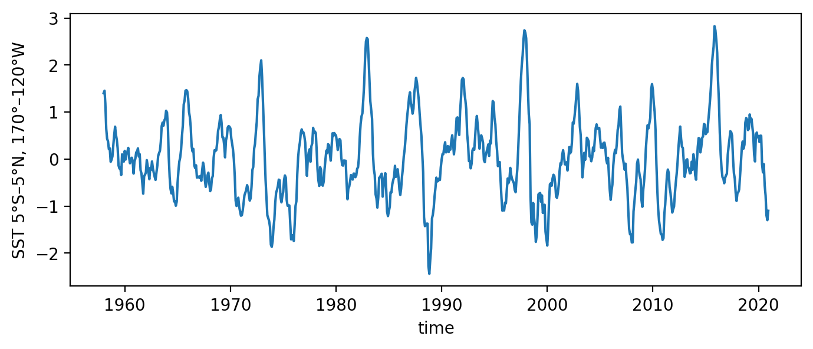
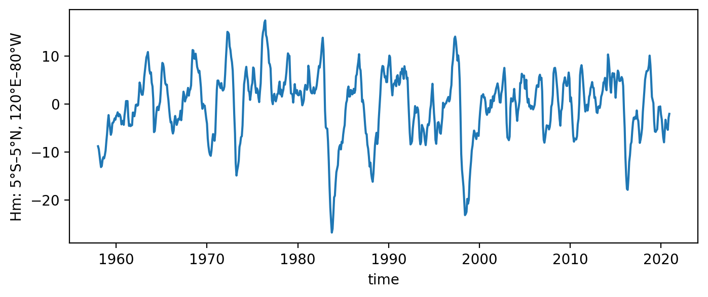
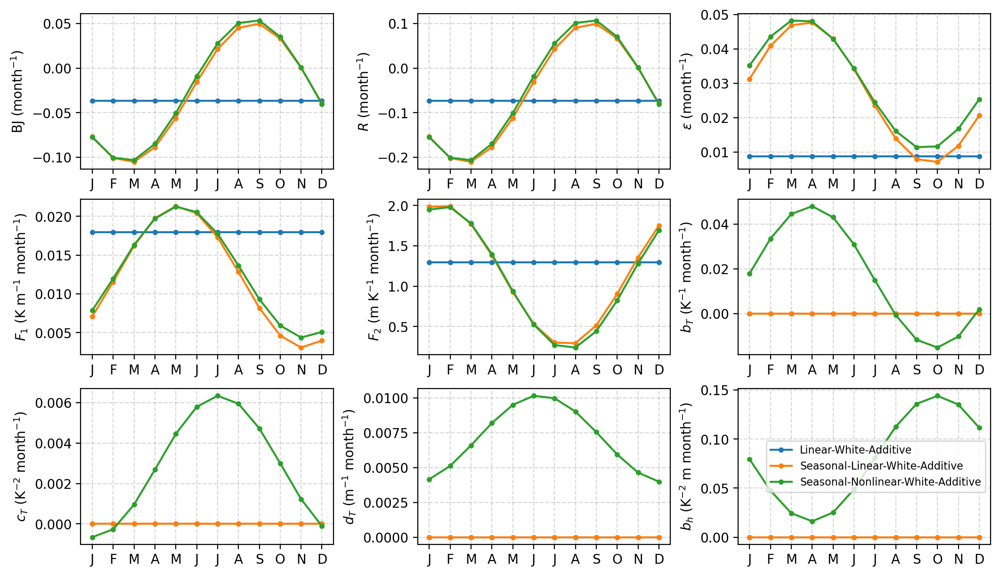
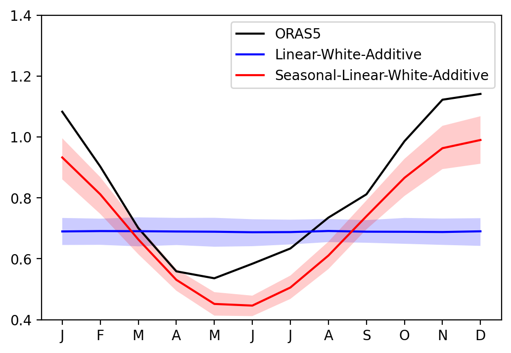
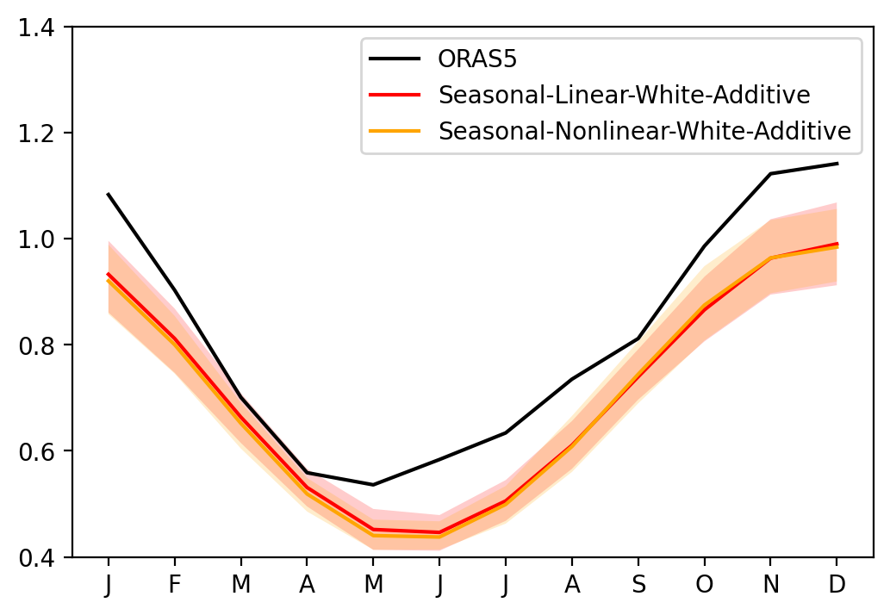
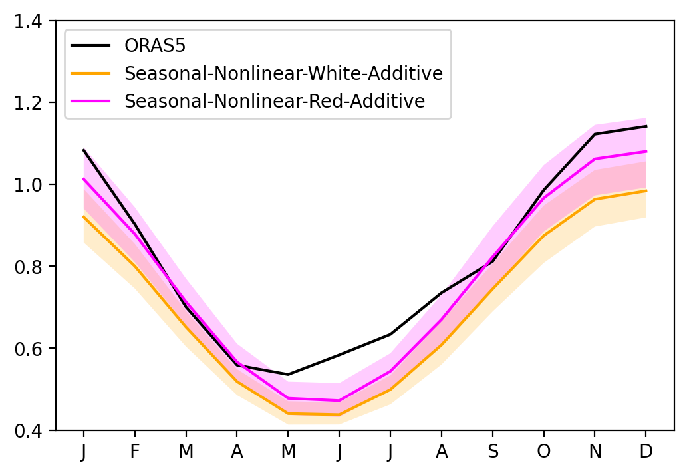

CRO fitting with observation#
This tutorial illustrates how to use the pyCRO to estimate RO parameters from the observations
This notebook was contributed by Sen Zhao.
Load library#
[1]:
%config IPCompleter.greedy = True
%matplotlib inline
%config InlineBackend.figure_format='retina'
%load_ext autoreload
%autoreload 2
import os
import sys
import numpy as np
import xarray as xr
import matplotlib.pyplot as plt
## comment this if you install pyCRO already
sys.path.append(os.path.abspath("../../../"))
import pyCRO
[2]:
pyCRO.RO_fitting?
Signature:
pyCRO.RO_fitting(
T,
h,
par_option_T,
par_option_h,
par_option_noise,
method_fitting=None,
dt=None,
verbose=True,
)
Docstring:
Fit the Recharge Oscillator (RO) model parameters to T and h time series.
This function performs parameter fitting for the RO system, using the specified
prescribed parameter options and noise characteristics. Fitting can be done
via linear regression (LR) or maximum likelihood estimation (MLE), with optional
handling for multiplicative or additive noise. It can automatically select a
default fitting method based on parameter options.
Parameters
----------
T : ndarray, shape (N,) or (N, 1)
Time series of SST anomalies (1D array).
h : ndarray, shape (N,) or (N, 1)
Time series of thermocline anomalies (1D array).
par_option_T : dict
Prescribed options for SST equation parameters.
Keys (R, F1, b_T, c_T, d_T):
Each entry Xi ∈ {0, 1, 3, 5}:
0 : parameter not included
1 : seasonally constant
3 : annual cycle
5 : annual + semiannual cycle
par_option_h : dict
Prescribed options for thermocline equation parameters.
Keys (F2, epsilon, b_h):
Each entry Xi ∈ {0, 1, 3, 5}:
0 : parameter not included
1 : seasonally constant
3 : annual cycle
5 : annual + semiannual cycle
par_option_noise : dict
Configuration of stochastic noise forcing in the RO system.
Keys:
T : {"white", "red"}
Noise type in SST equation.
h : {"white", "red"}
Noise type in thermocline equation (must be identical to T).
T_type : {"additive", "multiplicative", "multiplicative-H"}
Noise formulation:
additive : state-independent forcing
multiplicative : state-dependent forcing
multiplicative-H : Heaviside-modulated multiplicative forcing
Notes:
- T and h must be identical.
- Independent SST and thermocline noise structures are not supported.
method_fitting : str, optional
Parameter estimation method:
LR-F : Linear regression (forward difference)
LR-C : Linear regression (central difference)
LR-F-MAC : LR-F with moment-adjusted correction for SST noise
MLE : Maximum likelihood estimation
If None, the method is selected automatically based on model configuration.
dt : float, optional (default = 1.0)
Time step of input time series in months.
verbose : bool, optional (default=True)
If True, prints fitting information and progress.
Returns
-------
dict
Dictionary of fitted CRO parameters:
Keys include:
'R', 'F1', 'F2', 'epsilon', 'b_T', 'c_T', 'd_T', 'b_h',
'sigma_T', 'sigma_h', 'B', 'm_T', 'm_h', 'n_T', 'n_h', 'n_g'.
Notes
-----
- Automatically removes mean from input time series.
- Applies Ito-to-Stratonovich correction for multiplicative noise.
- Negligible seasonal amplitudes are rounded to zero.
- Ensures consistent noise settings for T and h equations.
- Prints a summary of the fitting process if `verbose` is True.
Examples
--------
>>> par_option_T = {'mean': 1, 'seasonal': 3, 'semi_annual': 0, ...}
>>> par_option_h = {'mean': 1, 'seasonal': 3, 'semi_annual': 0, ...}
>>> par_option_noise = {'T': 'red', 'h': 'red', 'T_type': 'multiplicative'}
>>> fitted_params = RO_fitting(T, h, par_option_T, par_option_h, par_option_noise)
>>> print(fitted_params['sigma_T'])
File: /export/epekema/zhaos/published/CRO/pyCRO/fitting.py
Type: function
RO Parameter Fitting Usage#
``par_fitted = pyCRO.RO_fitting(T, h, par_option_T, par_option_h, par_option_noise)``
Input T and h Time Series#
T and h are input timeseries used for the fitting.
T and h must be 1D time series arrays with a uniform time step.
Specifiying RO Type#
These options define the RO model type used for fitting.
par_option_T specifies the linear and nonlinear terms in dT/dt
par_option_h specifies the linear and nonlinear terms in dh/dt
par_option_noise specifies the noise type
The following example shows how to set the RO type as linear-white-additive RO for the fitting.
par_option_T = {"R": 1, "F1": 1, "b_T": 0, "c_T": 0, "d_T": 0}
par_option_h = {"F2": 1, "epsilon": 1, "b_h": 0}
For keys in
par_option_Tandpar_option_h, allowed values are:0— Do not estimate1— Estimate only the annual mean3— Estimate annual mean + annual seasonality5— Estimate annual mean + annual + semi-annual seasonality
par_option_noise = {"T": "white", "h": "white", "T_type": "multiplicative"}
Valid options for \(T\) and \(h\) are:
"white": white noise forcing"red": red noise forcing
Both \(T\) and \(h\) must use the same noise type; otherwise, an error is raised.
Valid options for
T-type(noise structure for \(T\)) are:"additive": T noise forcing is additive"multiplicative": T noise forcing is multiplicative"multiplicative-H": T noise forcing is Heaviside based-multiplicative noise
Fitting RO to the observation/reanalysis#
Load observed ENSO timeseries from ORAS5#
[3]:
# load observations
# use Nino3.4 as ENSO T, equatorial Pacific mean D20 anomalies as ENSO h
xr_ds = pyCRO.ROdata_load(name='ORAS5').rename({"Nino34": "T", "Hm": "h"})
T_oras5 = xr_ds['T'][:] # Nino 3.4 since 1979-01-01
h_oras5 = xr_ds['h'][:] # WWV since 1979-01-01
time_oras5 = xr_ds['time'][:] # Days since 1979-01-01
T_oras5.plot(figsize=(8, 3))
h_oras5.plot(figsize=(8, 3))
[3]:
[<matplotlib.lines.Line2D at 0x7f35bbc3a030>]


Type Linear-White-Additive#
Fit linear RO with white and additive noise
[4]:
par_option_T = {"R": 1, "F1": 1, "b_T": 0, "c_T": 0, "d_T": 0}
par_option_h = {"F2": 1, "epsilon": 1, "b_h": 0}
par_option_noise = {"T": "white", "h": "white", "T_type": "additive"}
par_obs_LWA = pyCRO.RO_fitting(T_oras5, h_oras5, par_option_T, par_option_h, par_option_noise)
par_obs_LWA
---------------------------------------------------------------------------------
Welcome to CRO Fitting! Your fitting setups:
---------------------------------------------------------------------------------
- Data time step is not given, defaulting to: dt = 1.0 months.
- Time series length: N = len(T)*dt = 756.0 months.
- Prescribed terms: {'R': 1, 'F1': 1, 'b_T': 0, 'c_T': 0, 'd_T': 0}.
{'F2': 1, 'epsilon': 1, 'b_h': 0}.
0 - Do not prescribe.
1 - Prescribe only the annual mean.
3 - Prescribe the annual mean and annual seasonality.
5 - Prescribe the annual mean, annual seasonality, and semi-annual seasonality.
- Noise options: {'T': 'white', 'h': 'white', 'T_type': 'additive'}.
- Fitting method for T and h main equations: None.
Referring to table_default_fitting_method.txt and using LR-F
---------------------------------------------------------------------------------
All steps are successfully completed!
---------------------------------------------------------------------------------
[4]:
{'R': [-0.07317026478704784],
'F1': [0.017938268212681383],
'F2': [1.2939079372638307],
'epsilon': [0.008754185303737162],
'b_T': [],
'c_T': [],
'd_T': [],
'b_h': [],
'sigma_T': [0.216845462713656],
'sigma_h': [1.553752421021908],
'B': [],
'm_T': [],
'm_h': [],
'n_T': [1],
'n_h': [1],
'n_g': [2]}
Type Seasonal-Linear-White-Additive#
Fit seasonal linear RO with white and additive noise
[5]:
par_option_T = {"R": 3, "F1": 3, "b_T": 0, "c_T": 0, "d_T": 0}
par_option_h = {"F2": 3, "epsilon": 3, "b_h": 0}
par_option_noise = {"T": "white", "h": "white", "T_type": "additive"}
par_obs_SLWA = pyCRO.RO_fitting(T_oras5, h_oras5, par_option_T, par_option_h, par_option_noise)
par_obs_SLWA
---------------------------------------------------------------------------------
Welcome to CRO Fitting! Your fitting setups:
---------------------------------------------------------------------------------
- Data time step is not given, defaulting to: dt = 1.0 months.
- Time series length: N = len(T)*dt = 756.0 months.
- Prescribed terms: {'R': 3, 'F1': 3, 'b_T': 0, 'c_T': 0, 'd_T': 0}.
{'F2': 3, 'epsilon': 3, 'b_h': 0}.
0 - Do not prescribe.
1 - Prescribe only the annual mean.
3 - Prescribe the annual mean and annual seasonality.
5 - Prescribe the annual mean, annual seasonality, and semi-annual seasonality.
- Noise options: {'T': 'white', 'h': 'white', 'T_type': 'additive'}.
- Fitting method for T and h main equations: None.
Referring to table_default_fitting_method.txt and using LR-F
---------------------------------------------------------------------------------
All steps are successfully completed!
---------------------------------------------------------------------------------
[5]:
{'R': [-0.05555720362184762, 0.15643266202992212, -2.724837018919836],
'F1': [0.012192175238321966, 0.009135876491421108, -0.8561045072488227],
'F2': [1.1422107431233532, 0.8755377037482505, 1.031621584884776],
'epsilon': [0.02739028639693814, 0.020607408516221015, -0.07267958345686498],
'b_T': [],
'c_T': [],
'd_T': [],
'b_h': [],
'sigma_T': [0.19760635529456444],
'sigma_h': [1.4672243314685984],
'B': [],
'm_T': [],
'm_h': [],
'n_T': [1],
'n_h': [1],
'n_g': [2]}
Type Seasonal-Nonlinear-White-Additive#
Fit seasonal nonlinear RO with white and additive noise
[6]:
par_option_T = {"R": 3, "F1": 3, "b_T": 3, "c_T": 3, "d_T": 3}
par_option_h = {"F2": 3, "epsilon": 3, "b_h": 3}
par_option_noise = {"T": "white", "h": "white", "T_type": "additive"}
par_obs_SNWA = pyCRO.RO_fitting(T_oras5, h_oras5, par_option_T, par_option_h, par_option_noise)
par_obs_SNWA
---------------------------------------------------------------------------------
Welcome to CRO Fitting! Your fitting setups:
---------------------------------------------------------------------------------
- Data time step is not given, defaulting to: dt = 1.0 months.
- Time series length: N = len(T)*dt = 756.0 months.
- Prescribed terms: {'R': 3, 'F1': 3, 'b_T': 3, 'c_T': 3, 'd_T': 3}.
{'F2': 3, 'epsilon': 3, 'b_h': 3}.
0 - Do not prescribe.
1 - Prescribe only the annual mean.
3 - Prescribe the annual mean and annual seasonality.
5 - Prescribe the annual mean, annual seasonality, and semi-annual seasonality.
- Noise options: {'T': 'white', 'h': 'white', 'T_type': 'additive'}.
- Fitting method for T and h main equations: None.
Referring to table_default_fitting_method.txt and using LR-F
---------------------------------------------------------------------------------
All steps are successfully completed!
---------------------------------------------------------------------------------
[6]:
{'R': [-0.04982239524993874, 0.15941833773505582, -2.68406670815438],
'F1': [0.012813901875247436, 0.008483053391420874, -0.8848228299417933],
'F2': [1.109405382383028, 0.8871565988562565, 0.9790375541196866],
'epsilon': [0.02982668378481908, 0.01894139468167164, 0.024198432485761742],
'b_T': [0.016378631629563104, 0.03167545049759429, -0.214994699950533],
'c_T': [0.002840643252726443, 0.003504250810615971, -1.8778412050005295],
'd_T': [0.007069900423760925, 0.0031200796182681238, -1.4634303845234378],
'b_h': [0.08014094748324661, 0.06393763800594855, 2.89072085365795],
'sigma_T': [0.19328334336766495],
'sigma_h': [1.4614523021246],
'B': [],
'm_T': [],
'm_h': [],
'n_T': [1],
'n_h': [1],
'n_g': [2]}
Type Seasonal-Nonlinear-Red-Additive#
Fit seasonal nonlinear RO with red and additive noise
[7]:
par_option_T = {"R": 3, "F1": 3, "b_T": 3, "c_T": 3, "d_T": 3}
par_option_h = {"F2": 3, "epsilon": 3, "b_h": 3}
par_option_noise = {"T": "red", "h": "red", "T_type": "additive"}
par_obs_SNRA = pyCRO.RO_fitting(T_oras5, h_oras5, par_option_T, par_option_h, par_option_noise)
par_obs_SNRA
---------------------------------------------------------------------------------
Welcome to CRO Fitting! Your fitting setups:
---------------------------------------------------------------------------------
- Data time step is not given, defaulting to: dt = 1.0 months.
- Time series length: N = len(T)*dt = 756.0 months.
- Prescribed terms: {'R': 3, 'F1': 3, 'b_T': 3, 'c_T': 3, 'd_T': 3}.
{'F2': 3, 'epsilon': 3, 'b_h': 3}.
0 - Do not prescribe.
1 - Prescribe only the annual mean.
3 - Prescribe the annual mean and annual seasonality.
5 - Prescribe the annual mean, annual seasonality, and semi-annual seasonality.
- Noise options: {'T': 'red', 'h': 'red', 'T_type': 'additive'}.
- Fitting method for T and h red noises: ARn.
This option is defined internally within fit.py.
Options available are: LR or AR1 or ARn.
- Fitting method for T and h main equations: None.
Referring to table_default_fitting_method.txt and using LR-F
---------------------------------------------------------------------------------
All steps are successfully completed!
---------------------------------------------------------------------------------
[7]:
{'R': [-0.04982239524993874, 0.15941833773505582, -2.68406670815438],
'F1': [0.012813901875247436, 0.008483053391420874, -0.8848228299417933],
'F2': [1.109405382383028, 0.8871565988562565, 0.9790375541196866],
'epsilon': [0.02982668378481908, 0.01894139468167164, 0.024198432485761742],
'b_T': [0.016378631629563104, 0.03167545049759429, -0.214994699950533],
'c_T': [0.002840643252726443, 0.003504250810615971, -1.8778412050005295],
'd_T': [0.007069900423760925, 0.0031200796182681238, -1.4634303845234378],
'b_h': [0.08014094748324661, 0.06393763800594855, 2.89072085365795],
'sigma_T': [0.19328334336766495],
'sigma_h': [1.4614523021246],
'B': [],
'm_T': [1.571262863353877],
'm_h': [1.6319923920979642],
'n_T': [0],
'n_h': [0],
'n_g': [2]}
Visualize the deterministic RO parameters#
[8]:
axes = pyCRO.plot_RO_par(par_obs_LWA, label='Linear-White-Additive', ncol=3)
axes = pyCRO.plot_RO_par(par_obs_SLWA, label='Seasonal-Linear-White-Additive', ncol=3, ax=axes)
axes = pyCRO.plot_RO_par(par_obs_SNWA, label='Seasonal-Nonlinear-White-Additive', ncol=3, ax=axes)
axes[-1].legend(fontsize=8)
[8]:
<matplotlib.legend.Legend at 0x7f35bbae2d20>

Simulating ENSO with observed RO parameters#
simulation with LWA type#
[9]:
%%time
RO_obs_LWA = pyCRO.CRO_simulate(par_obs_LWA, verbose=True)
---------------------------------------------------------------------------------
Welcome to the CRO Solver! Your simulation setup is as follows:
---------------------------------------------------------------------------------
- Total simulation length: N = 2400 months
- Number of ensemble members: NE = 100
- Numerical integration time step: dt = 0.1 months (default: 0.1)
- Data output interval: saveat = 1.0 months (default: 1.0)
- Initial conditions: IC = [T0, h0] = [0, 0]
- Input parameters have the expected shapes.
- 'n_T' = 1: White noise forcing in T; 'm_T' ignored.
- 'n_h' = 1: White noise forcing in h; 'm_h' ignored.
- 'n_g' = 2: Additive noise is used in the T equation; 'B' is ignored.
- Numerical integration method: NM = 'EH' (Euler–Heun method; default)
- Data saving method: savemethod = sampling (default)
- External forcing is not given, therefore using
EF = {'E_T': [0.0, 0.0, 0.0, 0.0, 0.0], 'E_h': [0.0, 0.0, 0.0, 0.0, 0.0]}.
- noise_custom = None: System-generated noise is used and changes at every run.
---------------------------------------------------------------------------------
Numerical integration starting:
---------------------------------------------------------------------------------
---------------------------------------------------------------------------------
All steps successfully completed!
---------------------------------------------------------------------------------
CPU times: user 4.34 s, sys: 54.9 ms, total: 4.39 s
Wall time: 4.39 s
[10]:
%%time
RO_obs_SLWA = pyCRO.CRO_simulate(par_obs_SLWA, verbose=False)
RO_obs_SNWA = pyCRO.CRO_simulate(par_obs_SNWA, verbose=False)
RO_obs_SNRA = pyCRO.CRO_simulate(par_obs_SNRA, verbose=False)
CPU times: user 11.4 s, sys: 151 ms, total: 11.6 s
Wall time: 11.6 s
calculation of seasonal standard deivation
[11]:
%%time
seaSD_obs = xr_ds.groupby('time.month').std('time')
seaSD_obsRO_LWA = RO_obs_LWA.groupby('time.month').std('time')
seaSD_obsRO_SLWA = RO_obs_SLWA.groupby('time.month').std('time')
seaSD_obsRO_SNWA = RO_obs_SNWA.groupby('time.month').std('time')
seaSD_obsRO_SNRA = RO_obs_SNRA.groupby('time.month').std('time')
CPU times: user 93 ms, sys: 3.99 ms, total: 97 ms
Wall time: 94.9 ms
Effect of seasonal cycle of RO linear parameters#
[12]:
sel_var = 'T'
fig, ax = plt.subplots(1, 1, figsize=(6, 4))
ax.plot(seaSD_obs.month, seaSD_obs[sel_var], c='k', label='ORAS5')
ax.plot(seaSD_obsRO_LWA.month, seaSD_obsRO_LWA[sel_var].mean('member'), c='blue', label='Linear-White-Additive')
ax.fill_between(seaSD_obsRO_LWA.month, seaSD_obsRO_LWA[sel_var].quantile(0.1, dim='member'), seaSD_obsRO_LWA[sel_var].quantile(0.9, dim='member'), fc='blue', alpha=0.2)
ax.plot(seaSD_obsRO_SLWA.month, seaSD_obsRO_SLWA[sel_var].mean('member'), c='red', label='Seasonal-Linear-White-Additive')
ax.fill_between(seaSD_obsRO_SLWA.month, seaSD_obsRO_SLWA[sel_var].quantile(0.1, dim='member'), seaSD_obsRO_SLWA[sel_var].quantile(0.9, dim='member'), fc='red', alpha=0.2)
ax.set_xticks(range(1, 13))
ax.set_xticklabels(["J","F","M","A","M","J","J","A","S","O","N","D"])
ax.set_ylim([0.4, 1.4])
ax.legend()
[12]:
<matplotlib.legend.Legend at 0x7f35b35441d0>

Effect of RO nonlinear parameters#
[13]:
sel_var = 'T'
fig, ax = plt.subplots(1, 1, figsize=(6, 4))
ax.plot(seaSD_obs.month, seaSD_obs[sel_var], c='k', label='ORAS5')
ax.plot(seaSD_obsRO_SLWA.month, seaSD_obsRO_SLWA[sel_var].mean('member'), c='red', label='Seasonal-Linear-White-Additive')
ax.fill_between(seaSD_obsRO_SLWA.month, seaSD_obsRO_SLWA[sel_var].quantile(0.1, dim='member'), seaSD_obsRO_SLWA[sel_var].quantile(0.9, dim='member'), fc='red', alpha=0.2)
ax.plot(seaSD_obsRO_SNWA.month, seaSD_obsRO_SNWA[sel_var].mean('member'), c='orange', label='Seasonal-Nonlinear-White-Additive')
ax.fill_between(seaSD_obsRO_SNWA.month, seaSD_obsRO_SNWA[sel_var].quantile(0.1, dim='member'), seaSD_obsRO_SNWA[sel_var].quantile(0.9, dim='member'), fc='orange', alpha=0.2)
ax.set_xticks(range(1, 13))
ax.set_xticklabels(["J","F","M","A","M","J","J","A","S","O","N","D"])
ax.set_ylim([0.4, 1.4])
ax.legend()
[13]:
<matplotlib.legend.Legend at 0x7f35b2011280>

Red noise vs White noise#
[14]:
sel_var = 'T'
fig, ax = plt.subplots(1, 1, figsize=(6, 4))
ax.plot(seaSD_obs.month, seaSD_obs[sel_var], c='k', label='ORAS5')
ax.plot(seaSD_obsRO_SNWA.month, seaSD_obsRO_SNWA[sel_var].mean('member'), c='orange', label='Seasonal-Nonlinear-White-Additive')
ax.fill_between(seaSD_obsRO_SNWA.month, seaSD_obsRO_SNWA[sel_var].quantile(0.1, dim='member'), seaSD_obsRO_SNWA[sel_var].quantile(0.9, dim='member'), fc='orange', alpha=0.2)
ax.plot(seaSD_obsRO_SNRA.month, seaSD_obsRO_SNRA[sel_var].mean('member'), c='magenta', label='Seasonal-Nonlinear-Red-Additive')
ax.fill_between(seaSD_obsRO_SNRA.month, seaSD_obsRO_SNRA[sel_var].quantile(0.1, dim='member'), seaSD_obsRO_SNRA[sel_var].quantile(0.9, dim='member'), fc='magenta', alpha=0.2)
ax.set_xticks(range(1, 13))
ax.set_xticklabels(["J","F","M","A","M","J","J","A","S","O","N","D"])
ax.set_ylim([0.4, 1.4])
ax.legend()
[14]:
<matplotlib.legend.Legend at 0x7f35b35ff950>

Advanced Usage (optional)#
``par_fitted = pyCRO.RO_fitting(T, h, par_option_T, par_option_h, par_option_noise, method_fitting)``
``par_fitted = pyCRO.RO_fitting(T, h, par_option_T, par_option_h, par_option_noise, method_fitting, dt)``
The following block sets additional optional settings for the RO parameter fitting.
The user may skip specifying these options. If the user doesn’t specify these options, the RO parameter fitting runs with the default settings.
method_fitting specifies the parameter fitting method:
"LR-F": Linear regression (tendency with forward differencing scheme)"LR-C": Linear regression (tendency with central differencing scheme)"LR-F-MAC": Linear regression (tendency with forward differencing scheme) with Moments Analytical Constraints estimation for T noise parameters"MLE": Maximum Likelihood Estimation (tendency with forward differencing scheme)
dt specifies time interval of input T and h time series in month (default = 1.0).
The default method depends on the specified RO type, as indicated in
"table_default_fitting_method.txt".Details of the fitting methods are documented in the manual and the accompanying paper.